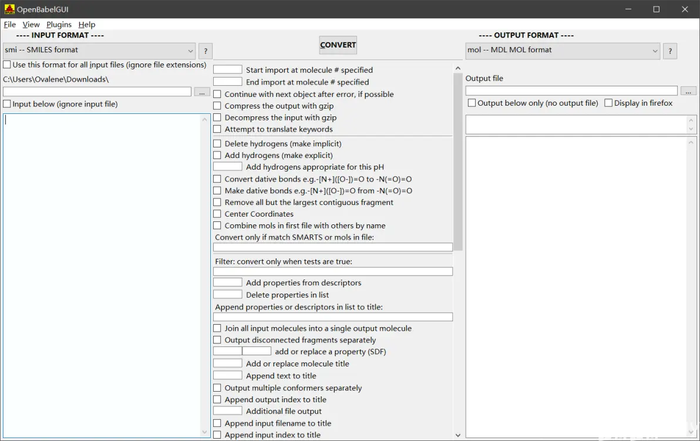
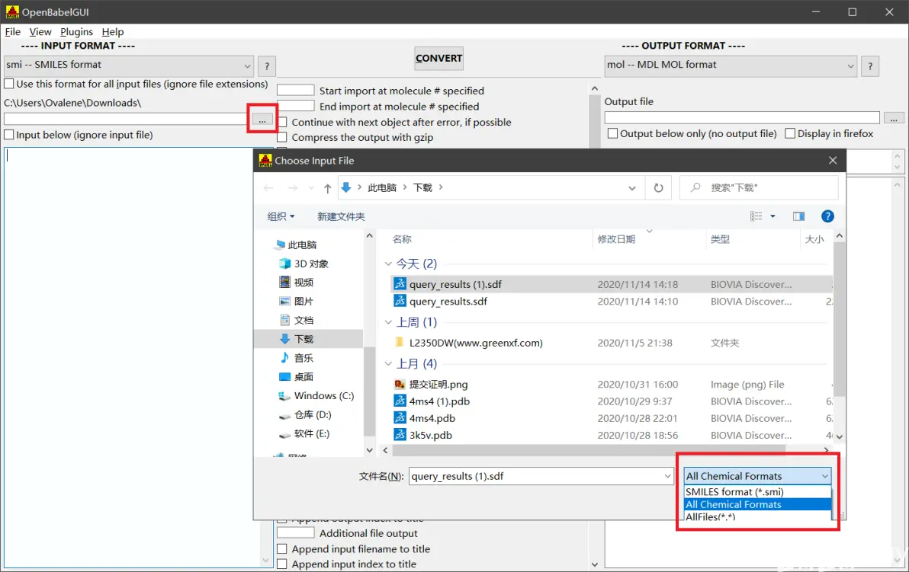
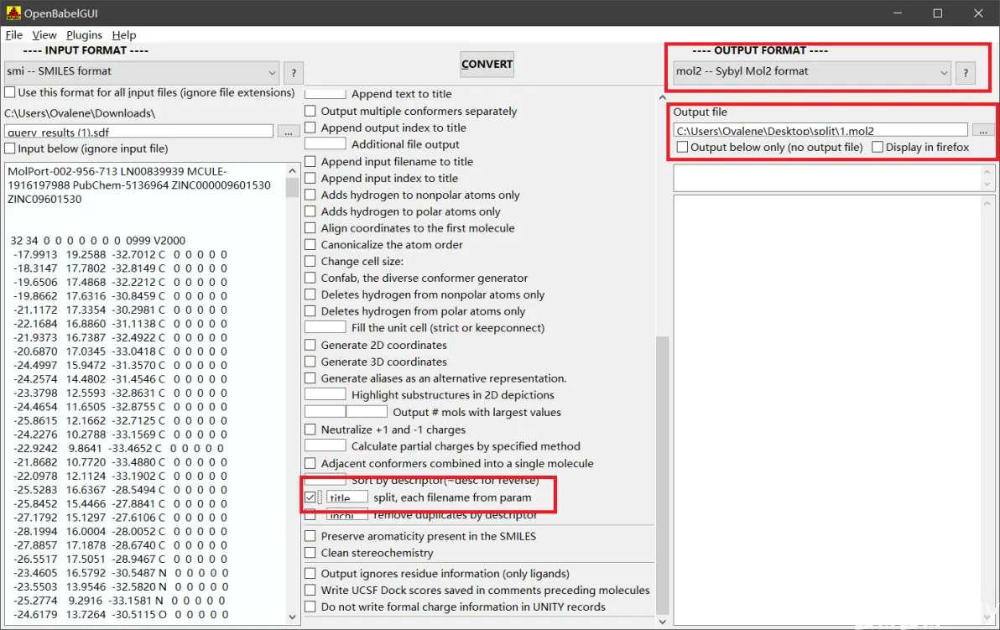
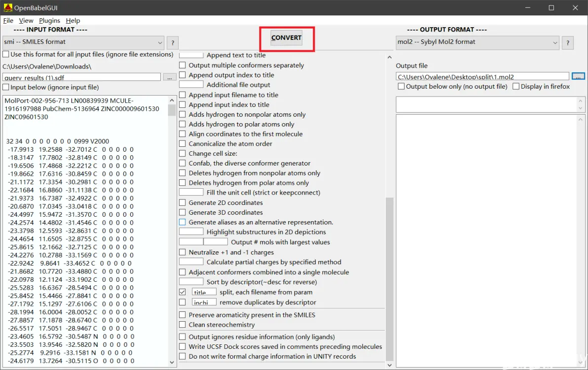
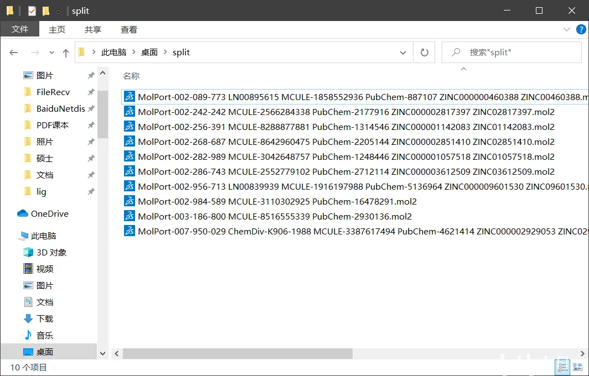

一种使用OpenBabel将包含多个小分子的sdf文件转化为仅包含单个小分子的mol2文件的方法 - 哔哩哔哩
首先需要下载并安装OpenBabel。可以从https://github.com/openbabel/openbabel/releases下载最新版本，如访问GitHub有困难，可以下载我上传的3.1.1版本https://share.weiyun.com/oBJnJPz9
安装完毕后打开，界面如下：

点击左上角红框中的…按钮，在右下角红框中选择All Chemical Formats，选择需要分割的sdf文件。注意若在input below前打勾，则…按钮会显示为灰色。

在右侧红框中选择导出格式为mol2，选择导出位置（这里文件名可以随便填没有影响），在中间红框标记的选项前打勾。若先打勾再选格式则中间的选项会被刷新，需要重新选择。

点击上方的CONVERT按钮

在选择的导出位置即可找到仅包含单个小分子结构的mol2文件：

在使用此方法处理包含10个小分子的sdf文件时全部分子都可被导出，但在处理包含100个小分子的sdf文件时会丢失十个左右的结构。目前尚不清楚导致此现象的原因，如有人知悉还请不吝指教。
另外若导出的文件名太长（例如图中的情况），在使用iGEMDOCK进行对接时会卡住，因此可以将导出的mol2文件全选并右键选择重命名，起个短一点的名字。重命名后的文件在Discovery Studio中打开依然会显示原本的名字，不用担心会弄混结构。